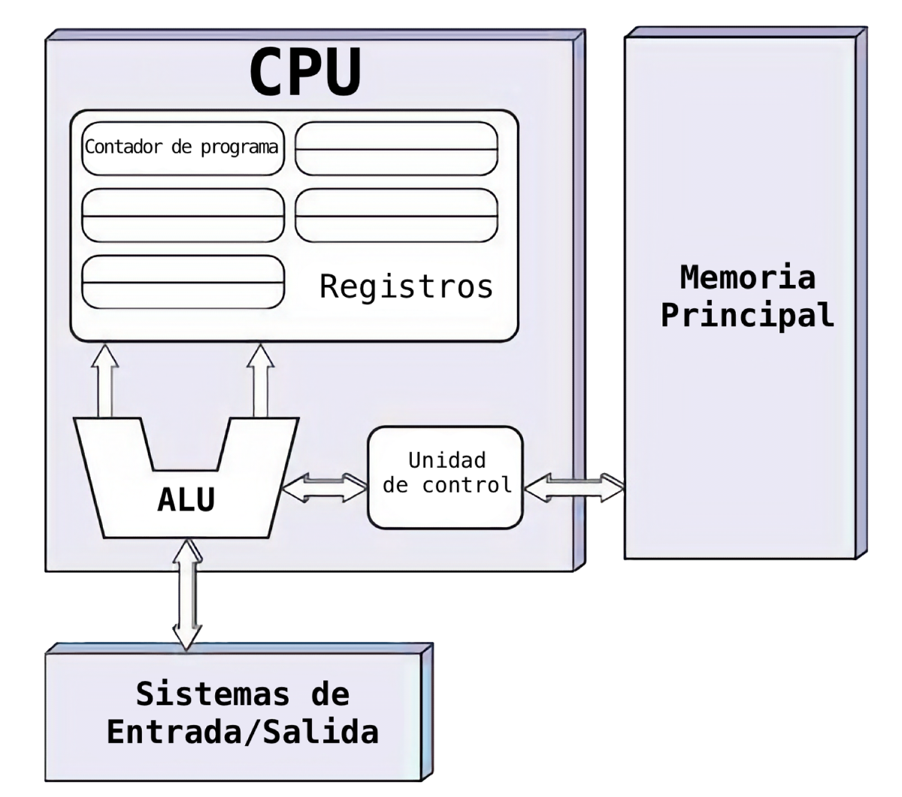

Unidad 1 - Introducción a los sistemas operativos
El sistema informático: visión global
¿Qué es un sistema informático y cómo se organiza?
Un sistema informático puede entenderse como una colaboración estructurada entre tres actores: hardware, software y personas usuarias. El hardware aporta la capacidad física de calcular, almacenar y comunicarse (CPU, memoria, discos, periféricos). El software dirige ese hardware con instrucciones y reglas (sistema operativo y aplicaciones). Las personas definen objetivos y criterios: qué datos introducir, qué transformaciones realizar y cuándo considerar válido el resultado.
El sistema operativo (SO) ocupa una posición central: es el “director de orquesta” que reparte tiempo de CPU entre programas, asigna memoria, coordina dispositivos de entrada/salida y organiza la información en archivos y carpetas. Sin él, las aplicaciones tendrían que hablar directamente con cada pieza de hardware, algo inviable por complejidad y seguridad.
Para visualizar esta colaboración, resulta útil seguir una tarea cotidiana. Al guardar un documento desde un procesador de textos, el programa pide al SO “abre/crea este archivo y escribe estos bytes”. El SO valida permisos, decide dónde guardarlo (en qué bloques del disco) y coordina al controlador del SSD para que la escritura sea segura y eficiente. Cuando vuelve la confirmación, la aplicación muestra “guardado”.
Componentes esenciales de hardware (visión funcional)
La CPU ejecuta instrucciones y realiza operaciones lógicas y aritméticas. Trabaja apoyada por registros (muy rápidos y pequeños) y por memoria caché, que intenta tener “a mano” los datos e instrucciones más probables. La memoria RAM es el banco de trabajo temporal: allí residen los programas y datos mientras se usan. El almacenamiento (HDD/SSD/NVMe) conserva la información aunque se apague el equipo; su fortaleza es la persistencia, no la velocidad de acceso. Los dispositivos de E/S (teclado, pantalla, red, impresora) permiten introducir y presentar información o conectarse con otros equipos. La placa base y sus buses interconectan todo lo anterior, mientras la fuente de alimentación entrega energía estable. Por debajo del SO opera el firmware (BIOS/UEFI): comprueba que el hardware es utilizable y arranca el sistema.
Más allá de los nombres, lo importante es comprender cómo impacta cada pieza en el uso diario: una CPU moderna abrirá programas con soltura si puede alimentarse de datos rápido; suficiente RAM evitará que el sistema “tire de disco” (lo que lo hace más lento); un SSD recorta tiempos de carga; una tarjeta de red estable mejora descargas y videollamadas. El rendimiento percibido es el resultado del equilibrio entre estas partes.
Interrelación y flujo de información (modelo de Von Neumann)
La mayoría de ordenadores personales siguen el modelo de von Neumann, en el que instrucciones y datos residen en una misma memoria y viajan por los mismos buses. La CPU ejecuta lo que se llama ciclo de instrucción:
- Búsqueda (fetch): trae de memoria la instrucción apuntada por el contador de programa.
- Decodificación (decode): interpreta qué operación es y con qué datos trabajará.
- Ejecución (execute): realiza el cálculo, comparación o movimiento solicitado.
- Escritura de resultados (write-back): guarda el resultado en un registro o en memoria.
- Actualización del contador de programa: pasa a la siguiente instrucción (o salta).

Este ciclo se repite millones de veces por segundo. Para ganar velocidad, las CPUs modernas solapan etapas (pipeline) y recurren a memorias caché que reducen esperas. Aunque estos detalles son internos, su efecto sí se nota: programas que “responden al instante” frente a otros que “piensan” porque dependen de datos aún no disponibles.
Un comentario frecuente es la diferencia entre este modelo y el Harvard (instrucciones y datos por caminos separados). En PCs corrientes basta con recordar que el esquema von Neumann es el predominante; la idea de Harvard aparece a veces de forma parcial dentro de las cachés (líneas separadas para instrucciones y datos).
Buses: cómo se mueven las señales
Para coordinar CPU, memoria y dispositivos se usan buses: conjuntos de líneas eléctricas o enlaces serie de alta velocidad que transportan datos, direcciones y señales de control (leer, escribir, interrupciones, reloj).
En un equipo actual conviven varios tipos. PCI Express (PCIe) conecta dispositivos de alto rendimiento (gráficas, SSD NVMe, tarjetas de red avanzadas) con enlaces escalables por “líneas” (x1, x4, x16). SATA une discos duros y SSDs de tipo 2,5”. USB sirve de conector universal para periféricos y almacenamiento externo; sus versiones (2.0/3.x) marcan límites de velocidad muy distintos. La memoria conversa con la CPU por canales dedicados de alta prioridad, porque cualquier retraso allí se nota en todo.
Un matiz clave: ancho de banda (lo que puede pasar por el “tubo”) no es lo mismo que latencia (lo que tarda en empezar a fluir). Copiar un archivo grande por USB 3.0 aprovecha bien el ancho de banda; abrir miles de ficheros diminutos castiga la latencia y puede ser más lento aunque la cifra “GB/s” sea alta.
Jerarquía de memoria: rapidez frente a capacidad
La memoria de un ordenador se organiza en una jerarquía donde, al subir hacia la CPU, todo es más rápido y caro, pero más pequeño:
- Registros (dentro de la CPU): acceso casi instantáneo, tamaño minúsculo.
- Cachés (L1/L2/L3): muy rápidas; anticipan datos e instrucciones probables.
- RAM: grande y razonablemente rápida; es el “taller” de trabajo.
- Almacenamiento (SSD/HDD): enorme y persistente, pero mucho más lento que la RAM.

Cuando un programa necesita datos, la CPU los busca primero en caché; si no están, sube a niveles más lentos (RAM, e incluso disco si falta memoria y hay memoria virtual). Esta escalera explica fenómenos comunes: con poca RAM, el sistema recurre al archivo de intercambio y todo se vuelve pesado; con suficiente RAM, los cambios entre aplicaciones resultan fluidos porque ya están en caché.
Entrada/salida: que el equipo no se "pare" al usar dispositivos
Los dispositivos (disco, red, teclado, impresora) necesitan atención de la CPU, pero no conviene que todo se detenga mientras la impresora termina una página o el SSD mueve bloques. Para evitarlo se emplean dos ideas prácticas:
- Interrupciones: el dispositivo “avisa” cuando algo importante sucede (terminó una lectura, llegó un paquete de red). La CPU atiende rápidamente esa señal y vuelve a lo suyo.
- DMA (Acceso Directo a Memoria): el dispositivo (o su controlador) puede transferir datos a RAM sin que la CPU copie byte a byte. La CPU solo configura la operación y es avisada al finalizar.
El resultado para el usuario es que el equipo sigue respondiendo mientras se descargan archivos, se imprime o se copia información en segundo plano.
Componentes lógicos: del firmware al sistema operativo
Al encender, el firmware (BIOS/UEFI) realiza un autodiagnóstico, detecta los dispositivos y localiza un cargador de arranque en la unidad correspondiente. Ese cargador inicia el kernel del sistema operativo, que a su vez identifica hardware, carga controladores (drivers) y monta el sistema de archivos principal. A partir de ahí, el SO ofrece servicios a las aplicaciones: abrir archivos, mostrar ventanas, conectarse a Internet, crear procesos, etc. Todo acceso al hardware pasa por el SO y sus drivers, lo que da estabilidad y seguridad (por ejemplo, evitar que un programa cualquiera bloquee el teclado o lea memoria de otro programa).
Representación de la información
De los datos a la información: idea general
En un ordenador todo se reduce a secuencias de bits (0 y 1). Un bit por sí solo apenas expresa algo; la información aparece cuando agrupamos bits siguiendo reglas de representación: un conjunto de 8 bits forma un byte y, dependiendo del contexto, ese byte puede representar el número 97, la letra “a”, parte del color de un píxel o una porción del sonido de una canción. El sistema operativo y las aplicaciones interpretan esos bits gracias a convenciones (sistemas de numeración, tablas de caracteres, formatos de archivo). Comprender esas reglas permite explicar por qué un archivo ocupa lo que ocupa, por qué algunos textos “salen con símbolos raros”, o por qué una imagen sin comprimir pesa mucho.
Sistemas de numeración: decimal, binario y haxadecimal
Los números se pueden escribir en distintas bases. En clase y en la vida diaria usamos base 10 (decimal). Los ordenadores operan en base 2 (binario) porque es natural para circuitos que detectan dos estados (alto/bajo, 1/0). Para los humanos, el hexadecimal (base 16) es una notación compacta del binario.
Notación posicional (recordatorio breve). En cualquier base, el valor de un número depende de sus cifras y de su posición. En decimal, 507 = 5×10² + 0×10¹ + 7×10⁰. En binario, 1011₂ = 1×2³ + 0×2² + 1×2¹ + 1×2⁰ = 11₁₀.
Por qué usamos hexadecimal. Cada grupo de 4 bits equivale a 1 dígito hexadecimal (porque 2⁴ = 16). Esto permite traducir binario↔hex rápido: 1011 0110₂ → B6₁₆. A la inversa, 0xAF → 1010 1111₂.
Conversión decimal → binario (método de divisiones sucesivas). Ejemplo: 13₁₀. Dividimos entre 2 y anotamos restos: • 13/2 = 6 resto 1 • 6/2 = 3 resto 0 • 3/2 = 1 resto 1 • 1/2 = 0 resto 1
Leídos de abajo arriba: 1101₂.
Conversión binario → decimal (sumando potencias). 110101₂ = 1×32 + 1×16 + 0×8 + 1×4 + 0×2 + 1×1 = 53₁₀.
Cómo se codifican los números
Los enteros y los reales se guardan con convenciones estables para que hardware y software “hablen el mismo idioma”.
Enteros sin signo. Con n bits se representan valores de 0 a 2ⁿ−1. Con 8 bits (1 byte), de 0 a 255.
Enteros con signo (complemento a 2). Es el estándar actual porque simplifica la aritmética. Con n bits, el rango es −2ⁿ⁻¹ … 2ⁿ⁻¹−1. Con 8 bits: −128 … 127.
- Cómo obtener el negativo de un número en binario (complemento a 2):
- Invierte los bits (complemento a 1). 2) Suma 1. Ejemplo: +5 en 8 bits es 0000 0101. Invertir → 1111 1010. +1 → 1111 1011 (esto es −5).
Reales (idea básica de IEEE 754). Un número real se guarda como signo, mantisa y exponente en base 2. Esto permite representar valores muy grandes o muy pequeños, pero no todos exactamente (hay redondeo). Por eso aparecerán resultados como 0,1 + 0,2 ≈ 0,30000000000000004 en ciertos lenguajes.
Codificación de texto: de ASCII a Unicode (UTF-8)
Un carácter también es un número. La cuestión es qué tabla se usa para mapear “número ↔ símbolo”.
- ASCII (7/8 bits): define 128 caracteres básicos (inglés). A = 65 decimal = 0x41.
- ISO-8859-1 / Windows-1252: amplían ASCII con acentos y símbolos europeos, pero no son universales.
- Unicode: intenta representar todos los idiomas y símbolos. La tabla central asigna a cada carácter un punto de código (p. ej., U+00F1 es “ñ”).
Unicode puede codificarse de varias maneras. La más común hoy es UTF-8:
- Es retrocompatible con ASCII: los 128 primeros caracteres ocupan 1 byte idéntico.
- Usa 1 a 4 bytes por carácter según el símbolo.
- Ejemplos:
- A → 0x41 (1 byte).
- ñ (U+00F1) → 0xC3 0xB1 (2 bytes).
- € (U+20AC) → 0xE2 0x82 0xAC (3 bytes).
Conclusión práctica: si un texto “sale con signos raros”, casi siempre es mala elección o mezcla de codificaciones. En 2025, UTF-8 es la opción por defecto en la mayoría de sistemas.
Representar imágenes y sonido (nociones que el SO necesita)
El sistema operativo no “entiende fotos” ni “entiende música” por arte de magia; entiende bytes etiquetados con un formato. Dos ideas clave:
Imágenes. Una imagen raster se compone de píxeles. Cada píxel guarda color con una profundidad típica de 24 bits (8 bits por canal RGB). Un fotograma 1920×1080 a 24 bpp ocupa en bruto: 1920×1080×3 bytes ≈ 6 220 800 bytes ≈ 5,94 MiB. Los formatos como PNG/JPEG añaden compresión (sin pérdida / con pérdida) y metadatos.
Audio digital. Se representa con frecuencia de muestreo (veces por segundo), profundidad de bits por muestra y canales. El CD de audio (44,1 kHz, 16 bits, estéreo) produce: 44100 × 16 × 2 ≈ 1 411 200 bps ≈ 1,411 Mbps ≈ 0,176 MB/s. Formatos como MP3/AAC/Opus comprimen reduciendo la tasa de bits.
Medidas de información: capacidad y velocidad
Conviene distinguir capacidad (cuánto cabe) y velocidad (a qué ritmo se mueve).
Unidades base.
- bit (b) y byte (B); 1 B = 8 b.
- Prefijos decimales (SI): kB (10³), MB (10⁶), GB (10⁹), TB (10¹²).
- Prefijos binarios (IEC): KiB (2¹⁰), MiB (2²⁰), GiB (2³⁰), TiB (2⁴⁰).
Ejemplo clásico (discos). Un disco de “1 TB” comercial anuncia 1 000 000 000 000 bytes. El sistema operativo suele mostrarlo en GiB: 1 000 000 000 000 / 1 073 741 824 ≈ 931 GiB. No falta espacio; cambió la unidad.
Velocidades.
- En redes se usan bits por segundo (Mb/s, Gb/s).
- En disco y memoria solemos ver bytes por segundo (MB/s, MiB/s). Para estimar: 100 Mb/s ≈ 12,5 MB/s (divide entre 8). El valor real será menor por cabeceras y protocolos.
Rendimiento real: más que MB/s. Intervienen:
- Ancho de banda (cuánto puede pasar por la tubería).
- Latencia (cuánto tarda en empezar cada transferencia).
- Tamaño de bloque (muchos archivos pequeños penalizan).
- IOPS (operaciones de E/S por segundo) y colas en SSDs NVMe.
Reglas prácticas y errores comunes (visión de técnico)
Aunque sea teoría, estas pautas ayudan a evitar confusiones en prácticas y exámenes:
- No mezclar unidades. Si un manual dice 500 MB y otro 500 MiB, no son iguales.
- Texto en UTF-8, salvo necesidad contraria. Evita mezclar codificaciones en el mismo proyecto.
- Comprender el rango de los enteros. Antes de guardar un valor, pregunta: ¿cabe en 8/16/32 bits con signo?
- Imágenes “pesadas” sin comprimir son normales: 24 bpp × píxeles suma rápido.
- Velocidad de red ≠ velocidad de disco. Descargar a 100 Mb/s no implica que el disco escriba a esa tasa si hay cuellos de botella.
Sistema operativo: funciones y elementos
¿Qué es un sistema operativo?
Un sistema operativo (SO) es el gestor de recursos del ordenador y, al mismo tiempo, la puerta de entrada para las aplicaciones. Gestiona el procesador, la memoria, los dispositivos de entrada/salida y los datos almacenados de forma segura, eficiente y ordenada. Sin SO, cada programa debería “hablar” directamente con cada pieza de hardware; con SO, los programas piden servicios (abrir un archivo, crear una ventana, enviar datos por la red) y el sistema decide cómo y cuándo atenderlos.
En la práctica, el SO cumple tres misiones inseparables:
- Abstraer el hardware (presenta una visión simplificada: “archivos”, “procesos”, “pantalla”).
- Arbitrar el uso de recursos (decide a qué proceso dar CPU, cuánta RAM asignar, quién accede a un dispositivo).
- Proteger el sistema y los datos (usuarios, permisos, aislamientos y políticas).
Elementos principales del sistema operativo
Aunque cada familia de SO tenga sus particularidades, casi todos comparten estas piezas.
Núcleo o kernel. Es la parte central que trabaja con máximos privilegios. Controla el procesador (planificador), la memoria (espacios de direcciones y paginación), la entrada/salida (colas, interrupciones, DMA), el sistema de archivos (nombres, directorios, caché), la red (sockets) y mecanismos de seguridad (cuentas, permisos, auditoría). El kernel no muestra ventanas ni menús; su función es hacer posible que el resto funcione.
Controladores (drivers). Traducen las órdenes genéricas del SO a instrucciones concretas para cada dispositivo (SSD, tarjeta de red, impresora, GPU). Un driver mal diseñado o inadecuado explica muchos fallos de estabilidad o de rendimiento.
Servicios o demonios de sistema. Programas en segundo plano que realizan tareas continuas o periódicas: registro de eventos, actualizaciones, spool de impresión, sincronización de hora, servidor de redes. En Windows se ven como “Servicios”; en GNU/Linux, como daemons gestionados por systemd u otro iniciador.
Interfaces de usuario: CLI y GUI.
- La CLI (línea de comandos) es un intérprete de órdenes (Bash, PowerShell, cmd) útil para automatizar con scripts y operar de forma precisa.
- La GUI (interfaz gráfica) ofrece escritorios, ventanas, menús, arrastrar y soltar. Suele ser más accesible para tareas esporádicas o visuales.
Bibliotecas y API del sistema. Conjunto de funciones que las aplicaciones utilizan para solicitar servicios al SO (por ejemplo, Win32 en Windows o las bibliotecas de glibc en Linux). Tras esa API hay llamadas al sistema que cruzan de espacio de usuario al kernel.
Funciones esenciales del sistema operativo
A continuación se desarrollan las funciones clave centradas en lo que el técnico necesita comprender y explicar.
Gestión del procesador (CPU)
El SO mantiene una cola de procesos listos para ejecutarse y decide, en fracciones de segundo, a quién ceder la CPU. Esta decisión la toma el planificador (scheduler). Cuando cambia de un proceso a otro, realiza un cambio de contexto (guarda y recupera registros y estado).
Ejemplo práctico: con un navegador, un reproductor de música y un editor abiertos, el planificador reparte tiempo para que “parezca” que todo va a la vez.
Gestión de memoria
Cada proceso ve un espacio de direcciones propio (memoria virtual), aunque físicamente la RAM es compartida. La paginación divide la memoria en bloques (páginas) que se cargan o expulsan según necesidad; si falta RAM, el SO usa memoria de intercambio (swap/archivo de paginación) en disco, más lenta.
- Efecto visible: si hay poca RAM y muchas aplicaciones abiertas, el sistema se vuelve “pesado” porque mueve páginas al disco.
- Beneficio de la virtualización: aísla procesos (evita que uno pise la memoria de otro) y permite cargar programas más grandes que la RAM disponible, con cuidado del rendimiento.
Entrada/salida (E/S)
El SO coordina la comunicación con dispositivos para que el equipo no se bloquee. Emplea buffers, colas e interrupciones; cuando es posible, configura DMA para que los datos se muevan entre dispositivo y RAM sin ocupar a la CPU.
Ejemplo: al copiar una carpeta grande a un USB, la barra de progreso avanza mientras seguimos usando otras aplicaciones; la CPU no “espera” activamente a cada bloque.
Sistema de archivos
Ofrece una estructura jerárquica (carpetas/ directorios), nombres y permisos para organizar datos. Mantiene cachés para acelerar accesos repetidos y, en sistemas modernos, usa técnicas como journaling para recuperar coherencia tras apagones.
Ejemplo: al guardar un documento, el SO traduce “carpeta/archivo.docx” a posiciones físicas del disco y asegura que los metadatos (tamaño, fechas) quedan consistentes.
Red
Proporciona sockets y pila de protocolos (TCP/IP, UDP) para que los programas envíen/reciban datos sin gestionar bits eléctricos.
Ejemplo: una videollamada usa sockets, colas de envío/recepción y buffers de jitter; el SO prioriza flujos y evita que otras tareas saturen la interfaz de red.
Seguridad y cuentas
Define usuarios y grupos, administra permisos (lectura/escritura/ejecución, ACL), controla la autenticación (contraseñas, PIN, biometría) y registra eventos. Mecanismos como UAC (Windows) o sudo/polkit (GNU/Linux) separan tareas de usuario de tareas administrativas.
Regla de oro: trabajar en el día a día con cuenta no administradora y elevar privilegios solo cuando sea necesario.
Servicios de sistema y mantenimiento
Incluye actualizaciones, registro de eventos (logs), tareas programadas, spool de impresión y sincronización de hora. Un sistema estable depende de que estos servicios estén activos y configurados.
Ejemplo: un error intermitente en una impresora suele resolverse revisando el spooler y los logs antes de reinstalar drivers.
Cómo usan el SO las aplicaciones: de la API a la llamada al sistema
Una aplicación no escribe en el disco “por su cuenta”. Llama a una función de biblioteca (API), que a su vez realiza una llamada al sistema (syscall) para cruzar al kernel. El kernel valida parámetros (¿tienes permiso?, ¿existe el archivo?), planifica la E/S y devuelve un código de resultado (éxito, error, motivo). Esta disciplina aporta seguridad (no se accede donde no se debe) y estabilidad (los errores quedan controlados).
Ejemplo encadenado (abrir una foto): 1. La app pide “abre foto.jpg”. 2. El SO comprueba permisos y localiza el archivo en el sistema de archivos. 3. Programa una lectura al dispositivo (posible DMA). 4. Devuelve los bytes a la app, que decodifica JPEG y los envía a la GUI para mostrarlos.
Modos de uso del SO: CLI y GUI (cuándo conviene cada una)
La GUI es directa y visual; ideal para explorar, configurar y trabajar con documentos. La CLI brilla cuando hay que automatizar, repetir tareas, operar en remoto o manejar muchos archivos con patrones.
- Windows (PowerShell)
- Listar con detalles: Get-ChildItem -Force
- Copiar recursivo: Copy-Item C:\Origen* C:\Destino -Recurse
- GNU/Linux (Bash)
- Listar con permisos: ls -l
- Buscar por patrón: find ~/Documentos -name "*.pdf"
La recomendación para un técnico de SMR es sentirse cómodo en ambos modos: la GUI para rapidez visual y la CLI para precisión y escalabilidad.
Rendimiento y fiabilidad: lo que hace el SO "por detrás"
Muchas decisiones del SO mejoran la experiencia sin que el usuario lo note explícitamente:
- Cachés y prefetch. Mantener en memoria datos usados recientemente reduce esperas; por eso una app abre más rápido la segunda vez.
- Prioridades y clases de planificación. Un proceso interactivo obtiene respuesta ágil; uno en segundo plano consume CPU cuando no molesta.
- Aislamiento y recuperación. Si un programa “se cuelga”, el SO puede cerrarlo y liberar recursos; si hay un apagón, el journaling ayuda a evitar daños mayores.
- Actualizaciones y controladores. Mantener el sistema y los drivers al día soluciona errores y mejora compatibilidad, a cambio de planificar bien cuándo actualizar.
Arquitectura del sistema operativo
Dos mundos separados: espacio de usuario y espacio de kernel
Para que un ordenador sea estable y seguro, el sistema operativo trabaja en dos niveles de privilegio. En espacio de usuario se ejecutan las aplicaciones (navegador, editor, cliente de correo) con permisos limitados. En espacio de kernel corre el núcleo del sistema, con acceso total al hardware y a todos los recursos. Esta separación evita que un fallo de una app arrastre a todo el sistema: si el editor “se cuelga”, lo normal es cerrarlo sin que se apague el equipo; si se dañara el kernel, sí veríamos un kernel panic (Linux) o una pantalla azul (Windows).
Entre ambos espacios hay una puerta controlada: las llamadas al sistema. Cuando una app necesita hacer algo privilegiado (leer un archivo, reservar RAM, abrir un socket), no accede al hardware directamente: pide el servicio al kernel y espera la respuesta. Así se logra orden, seguridad (comprobación de permisos) y uniformidad (todas las apps usan la misma interfaz).
De qué está hecho el kernel (visión funcional)
El kernel es el “cerebro” del sistema operativo. No muestra ventanas: coordina.
- Planificador de CPU: decide a qué proceso/hilo da tiempo de procesador y cuándo cambia de uno a otro (cambio de contexto).
- Gestor de memoria: mantiene los espacios de direcciones de cada proceso, aplica paginación y usa memoria virtual cuando falta RAM.
- Gestión de E/S: organiza colas, interrupciones y DMA para que el equipo responda mientras los dispositivos trabajan.
- Sistema de archivos: traduce nombres y rutas a ubicaciones físicas, mantiene metadatos y usa cachés para acelerar.
- Red: implementa las pilas de protocolos (TCP/IP, UDP) y los sockets.
- Seguridad: usuarios, grupos, permisos, auditoría, control de acceso.
- Sincronización: garantiza orden y coherencia cuando varios hilos acceden a recursos compartidos (bloqueos, colas, semáforos).
Diseños de kernel: monolítico, microkernel e híbrido
No todos los kernels se organizan igual. La elección afecta a rendimiento, mantenibilidad y tolerancia a fallos.
- Monolítico: la mayoría de servicios (sistema de archivos, red, controladores importantes) corren dentro del kernel. Ventaja: rapidez (menos cambios de contexto). Inconveniente: un error en un módulo puede afectar a todo el sistema si no está bien aislado. (Ej.: Linux moderno es monolítico y modular.)
- Microkernel: el kernel deja solo lo mínimo (planificación, memoria, IPC). Servicios como el sistema de archivos o el driver de red se ejecutan en usuario como servidores. Ventaja: mejor aislamiento (si un servidor falla, se reinicia sin tumbar el kernel). Inconveniente: más mensajería entre procesos puede penalizar. (Ej.: familias inspiradas en MINIX, se usa en ciertos sistemas embebidos y de investigación.)
- Híbrido/modular: mezcla práctica. Mantiene servicios críticos en kernel, pero con módulos cargables y capas que separan partes. (Ej.: Windows NT suele describirse como híbrido; Linux permite cargar/quitar módulos.)
Llamadas al sistema: el "idioma" entre aplicaciones y kernel
Las aplicaciones utilizan APIs (por ejemplo, Win32 o glibc) que, por debajo, invocan llamadas al sistema (syscalls). Hacer una syscall implica:
- Cruzar de usuario a kernel: la CPU cambia de modo mediante una instrucción especial (trap, sysenter/syscall).
- Validar: el kernel comprueba parámetros y permisos (¿puede este proceso abrir ese archivo?).
- Ejecutar la operación (p. ej., planificar lectura de disco, actualizar tablas de memoria).
- Devolver un código de resultado (éxito o error) y los datos solicitados.
Este camino es más lento que una función normal (hay cambio de modo y validaciones), por eso los sistemas operativos usan cachés y buffers para reducir el número de syscalls necesarias.
Interrupciones, excepciones y E/S eficiente
Los dispositivos no “gritan” continuamente a la CPU; avisan solo cuando toca.
- Una interrupción detiene brevemente lo que hacía la CPU y salta a una rutina de servicio que atiende el evento (llegó un paquete, terminó una lectura).
- Muchas operaciones de E/S se hacen con DMA: se configuran y el dispositivo transfiere datos entre memoria y periférico sin ocupar a la CPU.
- Para no pasar demasiado tiempo en la rutina de interrupción, el kernel suele dividir el trabajo en una parte rápida (arriba) y otra diferida (abajo), que se ejecuta cuando conviene.
Resultado visible: el equipo sigue respondiendo mientras copia archivos o imprime; la música no se corta porque otra app lea del disco.
Drivers y módulos: cómo habla el kernel con el hardware
Un driver es una pieza de software (a menudo un módulo del kernel) que actúa de traductor entre el kernel y un dispositivo concreto. Gracias a los drivers, el kernel ofrece una interfaz genérica (“lee del disco”, “envía por red”) mientras cada fabricante implementa los detalles.
- Carga dinámica: muchos drivers se cargan solo cuando el dispositivo está presente (ahorra memoria y reduce superficie de ataque).
- Estabilidad: un driver mal implementado puede causar cuelgues. Por eso los sistemas modernos aíslan, firman y actualizan drivers con cuidado.
- Rendimiento: los drivers de almacenamiento y red aprovechan colas, tamaños de bloque y offloads (checksum, segmentación) para escalar la velocidad.
Comunicación entre procesos (IPC) y sincronización
La arquitectura del SO necesita que los procesos se comuniquen sin invadirse. Para ello existen mecanismos de IPC:
- Pipes y redirecciones (encadenar comandos).
- Sockets (comunicación local o por red con la misma API).
- Memoria compartida (muy rápida, exige sincronización).
- Mensajes/colas y señales (notificaciones ligeras).
Cuando varios hilos acceden a un recurso común, se requieren primitivas de sincronización (mutex, semáforos, monitores) para evitar condiciones de carrera. A nivel práctico: si dos programas escriben a la vez en el mismo archivo sin coordinación, el resultado puede corromperse.
Arranque de servicios: del kernel al "sistema en marcha"
Tras cargar el kernel, el sistema inicia un gestor de servicios (por ejemplo, systemd en muchas distribuciones GNU/Linux o el Service Control Manager en Windows). Su trabajo es levantar y vigilar componentes como:
- Registro de eventos (logs).
- Red (cliente DHCP, firewall).
- Spool de impresión.
- Sincronización de hora.
- Actualizaciones automáticas.
Esta capa explica por qué algunas funciones aparecen “tarde” tras arrancar (la red necesita unos segundos) y por qué detener un servicio puede arreglar problemas sin reiniciar todo el equipo.
Seguridad estructural: modos de CPU, permisos y aislamiento
La arquitectura del SO se apoya en el hardware para hacer cumplir las reglas:
- Modos/Anillos de CPU: el kernel usa el modo privilegiado; las apps, el modo usuario. La CPU impide instrucciones peligrosas fuera del kernel.
- MMU y tablas de páginas: cada proceso ve solo su memoria; acceder a otra sin permiso provoca una excepción.
- Permisos y ACL: el kernel decide quién puede leer/escribir/ejecutar archivos y dispositivos.
- Aislamientos adicionales: sandboxes, virtualización y contenedores para separar entornos.
Consecuencia práctica: un malware que se ejecuta como usuario normal tiene mucho menos poder que uno que logra privilegios de administrador.
Lo que notas como usuario (síntomas y su raíz "arquitectónica")
- “Se me congela al abrir muchas apps” → presión de memoria, paginación a disco (gestor de memoria).
- “La impresora no responde” → servicio de impresión/driver en mal estado (drivers/servicios).
- “Descarga rápida pero va a trompicones” → latencia, colas de red, priorización (E/S y pila de red).
- “Aplicación cerrada por el sistema” → protección frente a accesos no permitidos o fallo interno (validaciones del kernel).
Procesos e hilos
Por qué existen los procesos
Un proceso es, en esencia, un programa en ejecución con su propio “entorno vital”: memoria, descriptores de archivos, permisos, variables de entorno y uno o varios hilos que ejecutan las instrucciones. Los procesos permiten aislar aplicaciones: si un proceso falla, el sistema puede terminarlo y liberar sus recursos sin tirar abajo todo el equipo. Para el técnico, pensar en procesos es pensar en unidad de trabajo gestionada por el sistema operativo: se crean, se planifican, esperan E/S, consumen CPU, terminan y dejan rastro en los registros del sistema.
Qué contiene un proceso y qué guarda el SO
Cada proceso tiene un espacio de direcciones privado con al menos cuatro zonas lógicas: código (instrucciones), datos estáticos, montón (memoria dinámica) y pila (marcos de llamada). Además, mantiene recursos asociados: archivos/directorios abiertos, sockets de red, identificadores de ventanas, temporizadores.
El sistema operativo conserva una ficha por proceso, el PCB (Process Control Block), con información imprescindible para gestionarlo: identificadores (PID, usuario), estado, contexto de CPU (registros y contador de programa), mapas de memoria, prioridad, estadísticas y lista de recursos. Durante un cambio de contexto, el kernel guarda el contexto del proceso saliente en su PCB y carga el del entrante. Este trabajo tiene un coste: demasiados cambios de contexto reducen rendimiento.
Ciclo de vida: estados y transiciones
Aunque cada sistema operativo introduce matices, el ciclo “clásico” es muy estable:
- Nuevo: el proceso está creándose; el SO reserva estructuras y memoria.
- Listo (Ready): preparado para usar CPU; espera turno en la cola del planificador.
- Ejecución (Running): ocupa un núcleo y avanza instrucciones.
- Bloqueado/Espera (Waiting/Blocked): detenido hasta que se cumpla un evento (fin de E/S, llegada de datos, temporizador).
- Terminado (Exit): finaliza y libera recursos.

Transiciones típicas:
- Listo → Ejecución: el planificador le asigna CPU.
- Ejecución → Bloqueado: inicia E/S y espera.
- Ejecución → Listo: el cuanto de tiempo se agota y cede la CPU (planificación expulsiva).
- Bloqueado → Listo: completa la E/S o se cumple el evento.
- Ejecución → Terminado: acaba correctamente o por error/señal.
Planificación de la CPU: cómo reparte el tiempo el SO
El planificador decide qué proceso o hilo ejecuta en cada momento. En equipos de usuario se emplea planificación expulsiva: si se agota el cuanto o llega uno de mayor prioridad, el sistema interrumpe al actual y da paso a otro.
Modelos básicos que conviene entender (a nivel conceptual):
- FCFS / FIFO: primero en llegar, primero en ejecutarse. Sencillo, pero puede causar esperas largas.
- SJF / SRTF: favorecen los trabajos cortos (el segundo es su versión expulsiva). Reducen el tiempo medio de espera, pero requieren estimar la “duración”.
- Round Robin (RR): cada proceso recibe un cuanto de CPU, en turnos. Es el típico en sistemas interactivos. Elegir bien el cuanto es clave: si es muy corto, habrá exceso de cambios de contexto; si es muy largo, la interacción se vuelve torpe.
- Prioridades: cada proceso tiene un nivel; el planificador atiende antes a los de mayor prioridad. Para evitar inanición, se usa envejecimiento (aumentar gradualmente la prioridad de quien lleva mucho esperando).
- Colas multinivel / MLFQ: combinan prioridades y Round Robin asignando colas con distintos quantum y políticas, promoviendo/demoviendo procesos según su comportamiento.
Qué mira el planificador para “ir bien”:
- Tiempo de respuesta en tareas interactivas (ventanas que responden rápido).
- Rendimiento sostenido en tareas de cálculo prolongado.
- Equidad entre procesos de usuarios distintos.
Señales, prioridad y afinidad
El sistema proporciona mecanismos para controlar procesos:
- Señales (Unix): notificaciones como “termina” o “reinicia” que una app puede atender. En la práctica de aula, el comando kill envía señales: kill -TERM PID intenta terminar con limpieza; kill -KILL PID fuerza el cierre.
- Prioridad / nice: permite sugerir al planificador en qué orden atender tareas. nice y renice (Linux) ajustan la “amabilidad” de un proceso: más nice, menos prioridad. En Windows, el Administrador de tareas permite cambiar la prioridad de un proceso.
- Afinidad: fijar qué núcleos puede usar un proceso; útil para pruebas o para aislar cargas.
Observar y gestionar procesos: herramientas básicas
En Windows:
- Administrador de tareas: pestañas de “Procesos” y “Rendimiento” muestran uso de CPU, memoria, disco y red por proceso; “Servicios” permite reiniciar spool de impresión o servicios atascados.
- PowerShell: Get-Process | Sort CPU -Descending | Select -First 10 para ver lo que más consume; Stop-Process -Id
para terminar; Start-Process para lanzar.
En GNU/Linux:
- top o htop para vista en vivo; ps -e -o pid,ppid,stat,pri,ni,cmd para listar con estado y prioridades.
- nice/renice para ajustar prioridad; kill/pkill/killall para terminar.
- pstree para ver la jerarquía padre-hijo; útil para localizar zombis y huérfanos.
Errores típicos y como diagnosticarlos
- Ventana “congelada” que vuelve a la vida al cabo de un rato: trabajo pesado en el hilo de la interfaz. Solución: mover cálculos o E/S a hilos de trabajo.
- CPU al 100% con un solo proceso: proceso CPU-bound; revisar si tiene sentido, limitar prioridad o dividir el trabajo.
- Memoria que sube sin bajar: posible fuga; cerrar y reabrir libera, pero conviene localizar el proceso y revisar su comportamiento.
- Disco al 100% con CPU baja: cuellos de E/S; tal vez copia masiva, antivirus analizando, o aplicación que escribe muchas cosas pequeñas.
- Muchos cambios de contexto y poca CPU útil: quantum demasiado corto o DEMASIADOS procesos; simplificar cargas o esperar.
Buenas prácticas
- Mantener aplicaciones que hagan E/S en segundo plano y no en el hilo de interfaz.
- Evitar abrir decenas de pestañas o programas si la RAM es limitada; forzará swap y penalizará a todos.
- Cerrar procesos que no respondan con la opción “terminar” antes de forzar el apagado; reduce el riesgo de corrupción.
- En servidores o prácticas largas, registrar hora y PID de procesos importantes para poder rastrear eventos en los logs.
Sistema de archivos
Estructura y organización: cómo se guarda y se encuentra la información
Un sistema de archivos (FS) es el conjunto de normas y estructuras que usa el sistema operativo para organizar los datos en un dispositivo de almacenamiento (disco, SSD, USB). Sin un FS, el disco sería un bloque enorme de bytes sin forma; con él, aparecen archivos con nombre, directorios que los agrupan, rutas para localizarlos y metadatos (tamaño, fechas, dueño, permisos) que describen su estado.
En la práctica, trabajamos con una jerarquía en forma de árbol. En GNU/Linux el árbol nace en la raíz /; todo cuelga de ahí (incluidos otros discos que se montan como subcarpetas). En Windows, cada volumen recibe normalmente una letra de unidad (C:, D:, E:), y cada una tiene su raíz (C:). Esta diferencia no cambia la idea clave: un camino único identifica a cada archivo (la ruta).
utas absolutas y relativas. Una ruta absoluta empieza desde la raíz del volumen: /home/ana/notas.txt o C:\Usuarios\Ana\notas.txt. Una ruta relativa parte de la carpeta actual: si estoy en /home/ana, docs/resumen.md apunta a /home/ana/docs/resumen.md. Los atajos . (esta carpeta) y .. (la superior) permiten moverse: ../imagenes/logo.png sube un nivel y entra en imagenes.
Nombres y extensiones. Los nombres describen y las extensiones orientan sobre el tipo ( .txt, .jpg, .docx). En GNU/Linux el tipo real lo determina el contenido (cabecera o magic number); la extensión solo ayuda a humanos y aplicaciones. En Windows, muchas asociaciones de apertura dependen de la extensión. También hay nombres reservados (Windows: CON, NUL, PRN y otros) y caracteres prohibidos (< > : " / \ | ? *). Linux es más flexible (permite cualquier carácter salvo / y el nulo), aunque conviene evitar caracteres problemáticos para compartir entre sistemas.
Archivos y directorios no son lo único. En sistemas tipo Unix existen tipos adicionales: enlaces simbólicos (atajos que apuntan a otra ruta), enlaces duros (otra entrada de nombre para el mismo contenido), dispositivos (archivos especiales en /dev), pipes y sockets. Windows soporta enlaces simbólicos y puntos de unión en NTFS, y además dispone de streams alternativos (ADS) para asociar datos “secundarios” a un archivo.
Metadatos vs datos. Un archivo consta de datos (el contenido) y metadatos (quién es el dueño, cuánto ocupa, cuándo se modificó, qué permisos tiene). Separar estas dos ideas ayuda a entender por qué puede cambiar la fecha de acceso sin tocar el contenido, o por qué un renombrado suele ser atómico (rápido y seguro): se retoca una entrada de directorio, no se “mueve” físicamente el contenido.
Particiones, volúmenes y montaje. Un mismo disco puede dividirse en particiones (trozos lógicos). Cada partición puede formatearse con un FS (NTFS, ext4, exFAT…). En Linux, cada FS se monta en una carpeta (ej.: montar el USB en /media/usb). En Windows, cada FS se expone como una unidad (D:), aunque también se puede montar en una carpeta NTFS. Este juego explica por qué “aparece” una nueva letra al conectar un USB o por qué en Linux el contenido de /mnt/datos cambia tras montar un volumen allí.
Cómo se ubican los datos en el disco. Un FS necesita un método para asignar bloques del dispositivo a los archivos. Existen enfoques:
- Extensiones/Extents: rangos contiguos (muy común en ext4, NTFS, XFS). Reducen la fragmentación lógica.
- Listas o índices: estructuras (árboles B+, tablas) para localizar rápidamente los bloques.
- Gestión del espacio libre: mapas de bits y otras estructuras para saber dónde hay huecos.
Con el tiempo aparece fragmentación (un archivo se “rompe” en trozos no contiguos). En HDD puede penalizar mucho; en SSD la penalización es menor, pero aun así es preferible mantener extents grandes por eficiencia y para reducir escrituras.
Operaciones habituales y su “lado técnico”. Crear, copiar, mover, renombrar y borrar activan mecanismos diferentes. Por ejemplo, renombrar suele ser una operación barata y atómica (se cambia una entrada de directorio). Mover dentro del mismo volumen también puede ser barato; mover entre volúmenes implica copiar y luego borrar. Borrar marca espacio como libre pero puede dejar datos recuperables hasta que el sistema los sobrescriba; en SSD, la orden TRIM informa al dispositivo de qué bloques puede reciclar.
Rutas, comodines y búsqueda. En CLI, los comodines ayudan: *.txt selecciona todos los .txt. Linux tiene globbing integrado en la shell; Windows PowerShell usa comodines y cmdlets ricos (filtrado por propiedades). Para búsquedas profundas: find en Linux, Get-ChildItem -Recurse en PowerShell.
Ejemplos mínimos (sin abusar de listas):
- Linux: ls -l /var/log, cp foto.jpg img/foto.jpg, mv .txt docs/, find ~/ -name ".pdf".
- PowerShell: Get-ChildItem C:\Datos -File, Copy-Item .\informe.docx .\2025\, Move-Item .png .\img\, Get-ChildItem -Recurse -Filter .pdf.
Tipos de sistemas de archivos
Hay muchos FS. Lo importante es saber para qué se diseñó cada uno y qué ofrece.
- FAT32. Muy compatible (funciona “en todas partes”), ideal para dispositivos antiguos, pero no guarda permisos avanzados y limita el tamaño de archivo a ~4 GB. Útil para pendrives “para cualquier equipo”, con esas restricciones.
- exFAT. Evolución pensada para memorias y discos externos grandes: sin límite de 4 GB, amplia compatibilidad en Windows, macOS y, hoy en día, Linux. No aporta permisos avanzados tipo POSIX.
- TFS (Windows). Sistema por defecto en Windows de escritorio y servidores. Ofrece ACLs avanzadas, compresión, cifrado (EFS), cuotas, enlaces y journaling. Es robusto y soporta archivos y volúmenes muy grandes.
- ext4 (GNU/Linux). Equilibrio entre rendimiento y estabilidad; soporta journaling, extents y opciones modernas. Es el estándar de hecho en muchas distribuciones.
- XFS (Linux). Muy buen rendimiento en archivos grandes y cargas de servidor; escalable.
- Btrfs (Linux). Diseñado con copy-on-write, instantáneas y subvolúmenes, verificación de integridad con sumas y opciones de compresión transparente.
- APFS (macOS). Moderno, copy-on-write, snapshots, cifrado fuerte por diseño, muy buen desempeño en SSD.
- ReFS (Windows Server, ciertas ediciones). Pensado para resiliencia y grandes volúmenes; prioriza integridad y escalado (no todas las características están disponibles en todas las ediciones de cliente).
Sugerencia de gráfico 5: tabla comparativa sencilla con columnas “Compatibilidad”, “Permisos avanzados/ACL”, “Journaling/CoW”, “Snapshots/Compresión”, “Límites de tamaño (aprox.)”, y filas: FAT32, exFAT, NTFS, ext4, XFS, Btrfs, APFS.
Límites y matices útiles de recordar. FAT32 no sirve para archivos muy grandes; exFAT es ideal para tarjetas SDXC y pendrives actuales; NTFS es la elección razonable para el disco del sistema en Windows y para discos externos que usarás sobre todo en Windows; ext4 “funciona siempre” en Linux de escritorio; si necesitas instantáneas y verificación de integridad, mira Btrfs/APFS. En entornos mixtos (Windows + macOS + Linux), exFAT suaviza roces, pero no da permisos finos.
Criterios de selección del sistema de archivos
Elegir un FS es una decisión técnica que afecta a compatibilidad, seguridad, rendimiento y mantenimiento. Para un técnico de SMR, la pregunta correcta no es “¿cuál es el mejor?” sino “¿cuál encaja con este uso?”. Estas son las variables que conviene ponderar:
Compatibilidad y portabilidad. ¿Dónde se usará el dispositivo? Si va a moverse entre Windows, macOS y Linux, exFAT suele ser la apuesta pragmática para USB grandes. Si es el disco del sistema en Windows, NTFS. En Linux de escritorio/servidor, ext4 (o XFS/Btrfs según necesidades). En Mac modernos, APFS.
Seguridad y control de acceso. ¿Necesitas permisos granulares, ACLs, cifrado, cuotas o auditoría? NTFS, ext4 (con ACLs POSIX), APFS, Btrfs y XFS cubren estas necesidades con distintos matices. Para USBs “para todos”, FAT/exFAT no ofrecen esa fineza.
Integridad frente a fallos. Aquí entran conceptos que desarrollaremos más en el punto 8: journaling (NTFS, ext4, XFS) o copy-on-write (Btrfs, APFS). Si el entorno sufre cortes de luz o desconexiones bruscas (portátiles, aulas), conviene priorizar FS con mecanismos de recuperación.
Rendimiento y patrón de uso. ¿Archivos muy grandes (vídeo, backups) o millones de archivos pequeños (logs, repositorios)? XFS y ext4 rinden muy bien con grandes; Btrfs aporta compresión transparente que puede ayudar con muchos pequeños; NTFS tiene buen desempeño general en Windows. En SSD, habilitar y mantener TRIM evita degradación.
Límites de tamaño. Asegura que los límite de archivo/volumen no te frenarán (FAT32 falla aquí). La mayoría de FS modernos manejan tamaños que superan con mucho las necesidades de aula/oficina.
Mantenimiento y herramientas. ¿Dispones de utilidades para comprobar (chkdsk/fsck), reparar, clonar y recuperar? En entornos educativos, prioridad a FS con herramientas maduras y bien documentadas.
Casos tipo (para decidir rápido, justificando):
- USB para clase (grande, pasar vídeos y trabajos): exFAT (compatibilidad y tamaño de archivo sin límite de 4 GB).
- Disco del sistema en Windows: NTFS (permisos, journaling, utilidades).
- Partición de datos en Linux: ext4 (equilibrio y herramientas).
- Servidor de ficheros con archivos grandes (Linux): XFS o ext4.
- Equipo macOS moderno: APFS (por diseño del sistema).
- Necesidad de instantáneas locales y verificación de integridad (Linux): Btrfs (sopesando curva de aprendizaje).
Atributos y permisos
uando guardamos un archivo, no solo almacenamos su contenido; también se registra información sobre él (quién es su dueño, cuándo se modificó, qué tamaño tiene, en qué carpeta está, etc.). A eso lo llamamos metadatos o atributos. Los permisos, en cambio, indican quién puede hacer qué con ese objeto: leerlo, modificarlo, ejecutarlo o entrar en su carpeta. En sistemas con varios usuarios (o incluso en un solo equipo con cuentas separadas) los permisos son la primera barrera de seguridad y también una herramienta de organización del trabajo (por ejemplo, una carpeta común donde todos leen, pero solo un grupo concreto escribe).
Atributos: lo que describe a un archivo o directorio
A nivel práctico vamos a encontrarnos siempre estos atributos básicos:
- Propietario y grupo: en sistemas tipo Unix (GNU/Linux), cada objeto tiene un usuario dueño y un grupo asociado; en Windows (NTFS) existe también un propietario y las ACL referencian usuarios y grupos del sistema.
- Tamaño: bytes de contenido. Ojo: el espacio físico ocupado puede ser mayor por el tamaño de bloque/cluster del sistema de archivos.
- Fechas y horas:
- Modificación (mtime): cambia cuando se altera el contenido.
- Acceso (atime): cambia cuando se lee (a veces se desactiva por rendimiento).
- Cambio (ctime en Unix): cambia cuando se modifica el estado (permisos, nombre, propietario).
- Tipo de objeto: archivo regular, directorio, enlace simbólico, dispositivo, socket, pipe (Unix); en NTFS también flujos alternativos de datos.
- Atributos especiales (varían según FS/SO):
- Windows: oculto (H), solo lectura (R), sistema (S), archivo (A).
- Linux (según FS): inmutable (chattr +i), solo anexo (+a), etc.
Permisos POSIX
En sistemas tipo Unix, cada archivo/directorio define permisos para tres “clases”:
- u (user): el propietario.
- g (group): el grupo asociado.
- o (others): el resto de usuarios.
Para cada clase se controlan tres acciones: r (read = 4), w (write = 2), x (execute = 1). La suma da la notación octal:
- rwx = 7, rw- = 6, r-x = 5, r-- = 4, -wx = 3, -w- = 2, --x = 1, --- = 0.
- Un modo típico -rwxr-x--- equivale a 750: dueño 7, grupo 5, otros 0.
Archivos vs directorios (muy importante):
- En archivos, r permite leer el contenido; w modificarlo; x ejecutarlo como programa o script.
- En directorios, x permite entrar (travesía); r permite listar los nombres; w permite crear/borrar/renombrar entradas. Un directorio sin x es “opaco”: ni entrar ni listar, aunque tengas r.
Permisos en NTFS (Windows)
En NTFS, la seguridad se basa en DACL (listas de control de acceso). Cada DACL contiene varias ACE (entradas) que conceden o deniegan permisos a usuarios o grupos. Los permisos “básicos” que verás en la GUI son combinaciones de permisos “avanzados”:
- Control total: todo, incluida la modificación de permisos y propiedad.
- Modificar: leer, escribir, borrar, crear; no toca permisos.
- Lectura y ejecución, Lectura, Escritura.
Dos ideas clave:
- Herencia: por defecto, los objetos heredan permisos de su carpeta padre. Puedes romper herencia y dejar permisos “explícitos”. Esto da control, pero aumenta la complejidad.
- Permisos efectivos: lo que realmente tiene un usuario surge de sumar permisos concedidos y restar los denegados a ese usuario y a los grupos a los que pertenece. Un DENY específico puede anular un ALLOW; hay que usarlo con mesura.
Comparativa POSIX vs NTFS
- Simplicidad vs granularidad: u–g–o es simple y rápido de leer; NTFS con ACL es muy granular. Linux puede usar ACL POSIX para casos no cubiertos por u–g–o.
- Herencia: en Linux, la herencia se emula con setgid en directorios y ACL por defecto; en NTFS la herencia es una propiedad de cada objeto.
- Atributos “visuales”: en Windows, “oculto” y “solo lectura” son atributos, no permisos. En Linux, la “ocultación” es un convenio (archivo que empieza por punto no se muestra por defecto) y el “solo lectura” es un permiso real (chmod a-w).
Errores frecuentes (y cómo evitarlos)
- Quitar x a un directorio y “matarlo”: sin x no puedes entrar, aunque tengas r para listar. Para carpetas de trabajo, casi siempre r-x como mínimo para quien deba acceder.
- Poner 777 “para que funcione”: pésima práctica.
- Abusar de DENY en NTFS: un deny mal puesto bloquea a usuarios legítimos y complica el análisis de permisos efectivos. Prefiere ALLOW bien definidos.
- Romper herencia sin documentar: al cabo de meses nadie recuerda por qué esa carpeta “se resiste”. Si rompes herencia, anótalo (y valora si te bastaba con una excepción puntual).
- Confundir “solo lectura” y permisos en Windows: el atributo “R” no sustituye a una ACL correcta.
Sistemas transaccionales y journaling
¿Qué es una transacción y por qué nos importa en SOM?
Una transacción es un conjunto de operaciones que el sistema trata como una unidad indivisible: o se realizan todas, o ninguna. Esta idea nació en bases de datos, pero tiene impacto directo en sistemas de archivos y, por tanto, en la integridad de tus datos. Si un equipo se apaga de golpe en mitad de un guardado, ¿quedará el archivo bien, mal… o el sistema sabrá volver a un estado coherente? Esa garantía depende de si hay mecanismos transaccionales (como el journaling) y de cómo se escriben los cambios.
ACID
Cuando oigas que un sistema es “transaccional”, suele apuntar a estas propiedades ACID (explicadas sin matemáticas):
- Atomicidad: o todo el conjunto de cambios se aplica, o nada.
- Consistencia: al finalizar, las reglas se respetan (p. ej., directorios y metadatos no quedan “a medias”).
- Aislamiento: mientras una transacción está en curso, otras no ven un estado raro intermedio.
- Durabilidad: una vez confirmada, los cambios sobreviven a un reinicio imprevisto.
En sistemas de archivos no siempre se cumple ACID para los datos, pero sí se busca al menos consistencia de metadatos (nombres, tamaños, entradas de directorio).
Journaling en sistemas de archivos: el diario que salva el día
Un FS con journaling anota primero en un diario (journal) qué cambios hará. Si todo va bien, marca la transacción como completada y después aplica (o confirma) los cambios “reales”. Si hay un corte, al arrancar se relee el diario y se repite o deshace lo pendiente para volver a un estado coherente rápidamente, sin tener que examinar todo el disco.
Hay varios modos (nombres y detalles cambian según FS, pero la idea es la misma):
- Solo metadatos: el diario protege estructuras (entradas de directorio, tamaños, inodos). El contenido del archivo puede perder los últimos bytes si el corte fue a mitad de una escritura, pero el árbol del FS no se corrompe. (Común en ext4 por defecto, NTFS).
- Datos + metadatos: se registran en el diario también los datos. Es más seguro para el contenido, pero más costoso en escrituras.
- Ordenado (ordered): los datos se escriben al disco antes de registrar los metadatos como “finales”. Reduce la posibilidad de ver basura en archivos tras un corte, con menos coste que “datos + metadatos”.
¿Qué ganamos?
- Arranques tras fallo mucho más rápidos (se lee el diario, no todo el disco).
- Coherencia estructural (no aparecen directorios “fantasma” ni tamaños imposibles).
- Menos necesidad de herramientas de reparación intensivas.
¿Qué pagamos?
- Más escrituras (se escribe en el diario y luego “de verdad”).
- Ligero impacto en rendimiento sostenido, a cambio de mucha más seguridad.
¿Y si el FS no tiene journaling? (FAT32, exFAT, otros)
Sigue existiendo y es útil para compatibilidad (pendrives que viajan entre muchos sistemas). Pero si retiras un USB sin expulsar o se va la luz en medio de una escritura, puede quedar inconsistente: entradas de directorio apuntando a datos inexistentes, tamaños incorrectos, etc. Los sistemas pasan entonces un chequeo (chkdsk, fsck) que repara lo que puede, a veces moviendo piezas a “archivos perdidos”.
Conclusión operativa: para discos del sistema o almacenamiento importante, mejor un FS con journaling o CoW. Para USB de intercambio, exFAT es práctico, pero siempre expulsar antes de retirar.
Cachés, flush, barreras: lo invisible que marca la diferencia
Entre la aplicación y el disco hay capas de caché (del SO y del propio dispositivo). Escribir en un archivo suele llenar un buffer y “parecer” instantáneo; solo cuando el sistema vacía (hace flush) esa caché a almacenamiento estable podemos decir que los datos son realmente durables.
Conceptos útiles:
- sync (Linux) fuerza a escribir al dispositivo lo que estaba pendiente.
- Barreras / fencing: órdenes que obligan a respetar el orden de escritura para mantener la coherencia del journaling.
- Política de caché del dispositivo (Windows: “mejor rendimiento” vs “extracción rápida”): si permites caché agresiva, más obligación de expulsar con seguridad.
¿Cómo escriben las aplicaciones para ser seguras?
Muchas aplicaciones no confían solo en el FS: escriben primero a un archivo temporal, sincronizan (fsync), y luego renombran sobre el archivo original. El renombrado suele ser atómico en el FS, de modo que verás o el archivo antiguo o el nuevo, pero no una mezcla. Si el FS tiene journaling y la app hace fsync donde toca, incluso un corte brusco dejará el sistema coherente y, a menudo, el archivo sano.
Buenas prácticas (que evitan disgustos)
- Expulsar siempre unidades extraíbles antes de retirarlas.
- Para trabajos largos en portátil, conectar a corriente o activar opciones que reduzcan caché si se va a desconectar con frecuencia.
- En Linux, aprender a usar sync (y en apps críticas, fsync).
- Elegir FS con journaling/CoW para datos importantes; reservar exFAT para intercambio entre sistemas.
- Hacer copias de seguridad: el journaling reduce corrupción, pero no protege frente a borrados accidentales o malware.